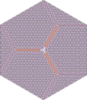
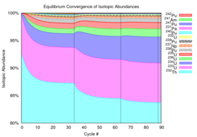
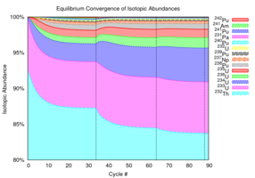

Overview of MocDown¶
 


MocDown is a nuclear reactor core simulator. It performs Monte Carlo depletion using MCNP6.1 for neutron transport and ORIGEN2.2 for transmutation–just like the MONTEBURNS, MOCUP, and VESTA codes.
MocDown is written in object-oriented Python3. It employs an accelerated equilibrium core composition search algorithm–ideal for systems with multi-recycling fuel cycles–and allows for loose, online coupling of thermo-fluids models. MocDown also takes a simple approach towards neutron source rate scaling which accounts for isotopic composition-dependent decay heat.
Access¶
The MocDown official code repository is hosted on github. From that repo, the MocDown source code can be downloaded as a tarball or zipfile or cloned with git:
git clone git://github.com/jeffseif/MocDown.git ;
Before it can be executed, MocDown has the following dependencies:
- Python 3
- numpy
- ORIGEN2.2
- MCNP5, MCNPX, or MCNP6
Documentation¶
Users and developers should consult the following resources:
How to cite¶
The best source for citing MocDown is a paper from the proceedings of the 2013 SNA&MC conference:
J. E. Seifried, P. M. Gorman, J. L. Vujic, and E. Greenspan. Accelerated Equilibrium Core Composition Search Using a New MCNP-Based Simulator. Proceedings of the SNA&MC 2013 conference, Paris, France, October, 2013.
Future work¶
MocDown can always be improved! The following is a (non-exhaustive) to-do list for code development.
- Add unit tests
- Finalize implementation of ParseMcnp.py
- Implement ORIGEN with Python (PORIGEN)
- Faster runtime
- No I/O
- No significant figure loss of precision
- One set of isotopes
- Calculate dose, radiotoxicity, and spontaneous neutron generation rates
- Improve RBWR-Th thermo-fluids models
- Add conservation of momentum
- Attach fine dP traverse
- Improve sub-cooling
- Couple to PATHS?
- Implement fuel temperature coupling
- Requires ACE data at many temperatures
- Code the MOX thermal conductivity correlation from MIT
- Generaliz fuel shuffling
- Refactor and generalize MCNP input updates
- Cell density
- Cell temperature
- Material composition
- Add more post-processing tools
- Reactivity swing
- Recycling output file
- Other performance metrics
- Add a switch to perform transport even when it is not needed
- Implement modified Euler predictor/corrector method of Kotlyar, p. 9
- Use __getstate__ and __setstate__ methods in creating pickles
Acknowledgements¶
MocDown was developed using funding received from the U.S. Department of Energy Office of Nuclear Energy’s Nuclear Energy Univeersity Programs and U.S. Department of Energy National Nuclear Security Administration under Award Number DE-NA0000979 at the University of California, Berkeley Department of Nuclear Engineering.